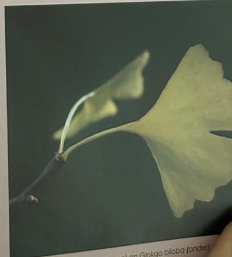

Groepen › Oude Wereld
37. China, Midden-Chinese provincies

China, een land als een continent, is met de beschikbare ruimte in arboretumgroep 37 zeker wel onderbedeeld. Het is lang een zeer gesloten land geweest en toen het arboretum werd ingericht, was er over zijn rijkdom aan boomsoorten en bostypes in het Westen nog weinig gekend. Langzamerhand doken wel soorten op die omwille van hun prehistorische vorm of opmerkelijke sierwaarde spectaculair overkwamen : Ginkgo, Watercipres, Cathaya, Cumminghamia, Vaantjesboom, Goudlariks, … Regisseur Liénard probeerde sinds de jaren 60 met nieuwe aanplantingen toch enige geografisch-logische ordening aan te brengen in de Groep – deze uitdaging is nog actueel. Subgroep 37A poogt een beeld te geven van het gematigd winterkaal loofbos in de provincie Hebei, waar verscheidene types gemengd eikenbos zich vormen rond respectievelijk Oosterse witte eik, Mongoolse eik, Chinese kurkeik en Japanse keizereik, vaak in associatie met codominante Chinese es en diverse okkernoot-, populier-, iep-, haagbeuk- en esdoornsoorten als begeleiders. Subgroep 37B staat voor het gemengd mesofytisch bos, in zekere zin subtropisch regenwoud, van de warmere provincie Zhejiang. Daar staan zowel bladverliezende als bladhoudende, zowel loof- als naaldbomen. In 37C komt het naaldbos van de bergen in Sichuan en Shaanxi aan bod, met diverse soorten sparren en zilversparren. De mooie sparrengroep werd jammerlijk uitgeroeid door de schorskeverplaag in de droge zomer van 2019.
Uit het boek
- China was gesloten toen het arboretum begon; 37C werd pas in de jaren 1960 aangelegd. Ginkgo, watercipres en de vaantjesboom.

Bron: Geografisch Arboretum Tervuren. Een wereldreis rond bomen (2020), p. 260 en volgende.
Deelgroepen
- 37A – Provincie Hebei
- 37B – Provincie Zhejiang
- 37C – Provincies Sichuan en Shaanxi
Soorten in deze groep (141)
- Phellodendron chinense var. glabriusculum65 bomen
- Picea asperata58 bomen
- Fraxinus mandschurica44 bomen
- Toona sinensisChinese mahonie · 39 bomen
- Catalpa x erubescensBastaardtrompetboom · 36 bomen
- Cryptomeria japonicaSikkelcipres · 33 bomen
- Euonymus alatusGevleugelde kardinaalsmuts · 33 bomen
- Metasequoia glyptostroboidesWatercipres · 31 bomen
- Picea wilsonii26 bomen
- Picea likiangensis var. rubescens20 bomen
- Morus albaWitte moerbei · 18 bomen
- Picea retroflexa17 bomen
- Rhododendron x geraldii17 bomen
- Castanea mollissimaChinese tamme kastanje · 16 bomen
- Acer davidii subsp. grosseriChinese slangenesdoorn · 15 bomen
- Ulmus pumilaSiberische iep · 15 bomen
- Fraxinus chinensis subsp. rhynchophyllaChinese es · 14 bomen
- Juglans mandschuricaMantsjoerijse walnoot · 13 bomen
- Acer capillipesRode slangenesdoorn · 12 bomen
- Ailanthus altissimaHemelboom · 12 bomen
- Betula pendulaRuwe berk · 12 bomen
- Fraxinus species12 bomen
- Zelkova serrataJapanse zelkova · 11 bomen
- Emmenopterys henryi10 bomen
- Fagus englerianaChinese beuk · 10 bomen
- Sorbus x arnoldiana10 bomen
- Cephalotaxus fortuneiChinese koptaxus · 9 bomen
- Larix gmeliniiOost-Siberische lork · 9 bomen
- Paulownia tomentosaAnna-Paulownaboom · 9 bomen
- Tilia speciesLinde · 9 bomen
- Acer tataricum subsp. ginnala7 bomen
- Carpinus turczaninowiiKoreaanse haagbeuk · 7 bomen
- Cunninghamia lanceolataChinese spiescipres · 6 bomen
- Decaisnea fargesiiAugurkenstruik · 6 bomen
- Hovenia dulcisJapanse krentenboom · 6 bomen
- Quercus dentataJapanse keizereik · 6 bomen
- Acer davidiiChinese slangenesdoorn · 5 bomen
- Elaeagnus umbellataSchermbloemige olijfwilg · 5 bomen
- Picea likiangensisLi-Kiang spar · 5 bomen
- Quercus acutissimaGezaagdbladige Eik · 5 bomen
- Davidia involucrata var. vilmorinianaVaantjesboom · 4 bomen
- Juglans ailanthifoliaJapanse walnoot · 4 bomen
- Malus species4 bomen
- Nyssa sinensisChinese Tupeloboom · 4 bomen
- Philadelphus incanus4 bomen
- Poliothyrsis sinensis4 bomen
- Pyrus communisGewone peer · 4 bomen
- Quercus alienaOosterse witte eik · 4 bomen
- Quercus liaotungensis4 bomen
- Sorbus species4 bomen
- Tilia x moltkei4 bomen
- Actinidia arguta3 bomen
- Cornus walteri3 bomen
- Eucommia ulmoidesIepbladige gummiboom° · 3 bomen
- Lonicera maackii var. podocarpa3 bomen
- Malus baccata3 bomen
- Malus hupehensis3 bomen
- Picea likiangensis var. montigenaLi-Kiangspar · 3 bomen
- Picrasma quassioides3 bomen
- Syringa pubescens3 bomen
- Syringa reticulata subsp. pekinensis3 bomen
- Abies chensiensisShensizilverspar · 2 bomen
- Berberis wilsoniiZuurbes · 2 bomen
- Betula utilis var. utilisHimalayaberk · 2 bomen
- Chionanthus retususChinese sneeuwvlokkenboom · 2 bomen
- Cornus controversaGrote pagodekornoelje · 2 bomen
- Corylopsis sinensisSchijnhazelaar · 2 bomen
- Fraxinus baroniana2 bomen
- Fraxinus longicuspis2 bomen
- Juglans speciesWalnoot · 2 bomen
- Kalopanax septemlobusStekelboom · 2 bomen
- Larix deciduaEuropese lork · 2 bomen
- Paulownia fargesii2 bomen
- Pinus armandiiChinese witte den · 2 bomen
- Platycarya strobilacea2 bomen
- Populus simoniiChinese Balsempopulier · 2 bomen
- Prunus padus var. pubescens2 bomen
- Pterocarya species2 bomen
- Pterocarya stenopteraChinese vleugelnoot · 2 bomen
- Pterostyrax hispida2 bomen
- Quercus glaucaJapanse blauwe eik · 2 bomen
- Quercus serrataKonara-eik · 2 bomen
- Rhododendron auriculatum2 bomen
- Rosa multiflora2 bomen
- Sorbus alnifolia2 bomen
- Tetradium daniellii2 bomen
- Ulmus parvifoliaChinese iep · 2 bomen
- Zelkova schneiderana2 bomen
- Zelkova sinicaChinese zelkova · 2 bomen
- Abies recurvataMinzilverspar · 1 boom
- Abies specieszilverspar · 1 boom
- Abies sutchuenensis1 boom
- Acer campestreSpaanse aak · 1 boom
- Ampelopsis megalophylla1 boom
- Carpinus betulusGewone haagbeuk · 1 boom
- Carpinus tschonoskiiAziatische haagbeuk · 1 boom
- Castanea specieskastanje · 1 boom
- Catalpa bungei1 boom
- Catalpa ovataGele Trompetboom · 1 boom
- Catalpa speciosaGrote trompetboom · 1 boom
- Celastrus orbiculatusBoomwurger · 1 boom
- Chimonanthus praecoxWinterzoet · 1 boom
- Cornus bretschneideri1 boom
- Cotoneaster horizontalis1 boom
- Crataegus species1 boom
- Davidia involucrata var. involucrata1 boom
- Deutzia hookeriana1 boom
- Deutzia hybrida1 boom
- Forsythia viridissimaGroene forsythia · 1 boom
- Ginkgo bilobaGinkgo · 1 boom
- Gleditsia japonicaJapanse gleditsia · 1 boom
- Juniperus rigidaNaaldjeneverbes · 1 boom
- Koelreuteria paniculataZeepboom · 1 boom
- Ligustrum sinense1 boom
- Magnolia denudata1 boom
- Magnolia officinalis var. biloba1 boom
- Magnolia sprengeri f. diva1 boom
- Picea meyeri1 boom
- Pinus densifloraJapanse rode den · 1 boom
- Prunus serrula1 boom
- Prunus species1 boom
- Pseudolarix amabilisGoudlork · 1 boom
- Pseudotsuga sinensis1 boom
- Pterocarya rhoifoliaJapanse vleugelnoot · 1 boom
- Pteroceltis tatarinowii1 boom
- Pyrus pashia1 boom
- Quercus fabrei1 boom
- Quercus myrsinifolia1 boom
- Quercus roburZomereik · 1 boom
- Quercus variabilisChinese kurkeik · 1 boom
- Rhododendron searsiae1 boom
- Rhododendron species1 boom
- Rosa moyesii1 boom
- Sorbaria sorbifolia1 boom
- Sorbus domestica f. pyriformis1 boom
- Sorbus prattii1 boom
- Spiraea thunbergii1 boom
- Styrax obassiaRondbladige Storaxboom · 1 boom
- Taxus baccata cv. fastigiata1 boom
- Torreya grandisWelriekende torreya · 1 boom
- Viburnum cylindricum1 boom
Tekst en foto: arboretum-tervuren.be (Koninklijke Schenking), met toestemming gebruikt.